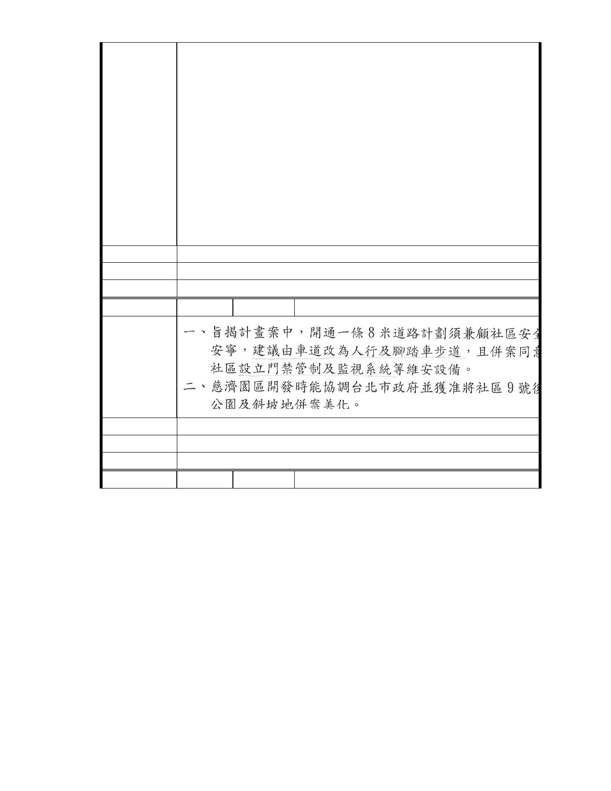

際志工中心及緊急救難中心的建立，為內湖帶來溫暖的人文情懷。讓科
技及人文能結合一起，並將台北市進一步與國際社會的愛心相連結，這
何嘗不是台灣之光及台灣人的榮耀。
我們贊成慈濟所強調的自然人文不會永遠互相排斥，在這一塊慈濟園區
裡設置生態園區，使內湖成為台北的後花園之ㄧ，這裡是市民及孩童分
享愛心、付出社會的學習處所，也是台北市民休憩、瞭解自然小生態的
合適場地。慈濟進入內湖建設社會福利人文是我們的期待，也是內湖人
的榮幸。期望慈濟內湖園區建設成為台北最理想的人文與生態共融共榮
的景觀示範區。
請郝市長了解
建議辦法
市 府 說 明 相關陳情意見將納入本案審查人民意見，依法定程序辦理。
委 員 會 決 議 同編號 1。
編
號 241
陳情人 大湖山莊社區發展委員會
陳情理由
建議辦法
市 府 說 明 相關陳情意見將納入本案審查人民意見，依法定程序辦理。
委 員 會 決 議 同編號 1。
編
號 242
陳情人 台北市內湖區體育會
- 286 -